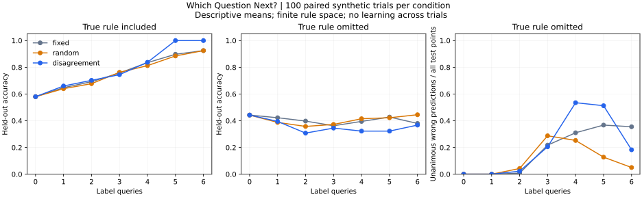

Choosing evidence
Which questions help an agent distinguish competing explanations under a limited interaction budget?
I explore how human and artificial agents interpret evidence, allocate effort, and revise beliefs under uncertainty. My interests connect human–information interaction and epistemology with adaptive learning and the evaluation of knowledge.
I am interested in the assumptions embedded in computational systems: what they let an agent explain, what feedback counts as progress, and when an agent should reconsider its understanding.
Which questions help an agent distinguish competing explanations under a limited interaction budget?
How can an agent recognize that its available explanations are inadequate, even when they agree?
What experience from successful and unsuccessful inquiry could improve investigation on unfamiliar tasks?
The first experiment studies query selection in a finite rule space. Learning across tasks, open-endedness, and scientific discovery remain future directions.
When does an informative question help, and when do an agent's assumptions make it misleading?
An agent requests labels for objects with four binary attributes, then predicts labels for unseen objects. Three strategies choose questions: a fixed sequence, random selection, and disagreement among the remaining candidate explanations.
Candidate rules, with a separate condition where the true rule is excluded.
Paired synthetic trials per condition. Each strategy sees the same task and evaluation split.
Label queries. Held-out objects are never available for querying.

Descriptive means from the executed experiment. Lines connect dependent budget checkpoints; they do not show confidence intervals.
Interpretation: efficient inquiry inside an assumed explanation space does not guarantee effective inquiry outside it. The omitted-rule condition also changes task complexity, so a matched-target control is needed to isolate the effect of model misspecification.
A standard active-learning baseline in a small, noiseless domain. This is not a novel algorithm, an RL system, or evidence of self-improvement across tasks. Personal walkthrough and further analysis are in progress.
Python 3.10+. The experiment uses only the standard library. No model downloads or API keys are required.
git clone https://github.com/saraelsh13/portfolio.git
cd portfolio/research/which-question-next
python experiment.py --seeds 100
python -m unittest -vAdA motivates questions about hypothesis-driven exploration, memory, and curricula near the frontier of an agent's capabilities.
Read the draft note · Source paperHindsight experience replay in theorem proving motivates questions about what intermediate outcomes an agent should retain.
Read the draft note · Source paperThese notes currently summarize abstracts and identify questions for closer reading. The experiment implements neither paper's method.
Keep target rules fixed while varying the available explanations. Compare abstention and model expansion after inconsistency. Then ask what would be required to learn an investigation strategy that transfers across task families.